File: 000690.gt.txt (if the image is defective, simply delete all Arabic text and the line will be excluded)
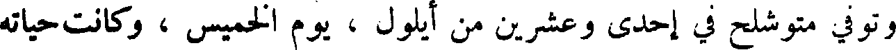
وتوفي متوشلح في إحدى وعشرين من أيلول ، يوم الخميس ، وكانت حياته
File: 000691.gt.txt (if the image is defective, simply delete all Arabic text and the line will be excluded)
لمك بن متوشلح
File: 000692.gt.txt (if the image is defective, simply delete all Arabic text and the line will be excluded)
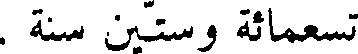
تسعمائة وستين سنة .
File: 000693.gt.txt (if the image is defective, simply delete all Arabic text and the line will be excluded)
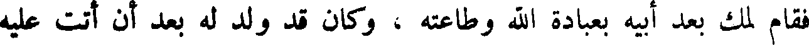
فقام لمك بعد أبيه بعبادة الله وطاعته ، وكان قد ولد له بعد أن أتت عليه
File: 000694.gt.txt (if the image is defective, simply delete all Arabic text and the line will be excluded)
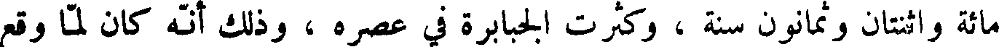
مائة واثنتان وثمانون سنة ، وكثرت الجبابرة في عصره ، وذلك انه كان لما وقع
File: 000695.gt.txt (if the image is defective, simply delete all Arabic text and the line will be excluded)
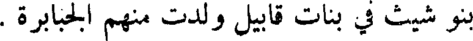
بنو شيث في بنات قابيل ولدت منهم جبابرة .
File: 000696.gt.txt (if the image is defective, simply delete all Arabic text and the line will be excluded)
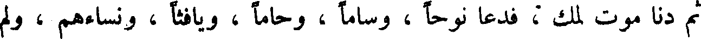
ثم دنا موت لمك ، فدعا نوحا ، وساما ، وحاما ، ويافثا ، ونساءهم ، ولم
File: 000697.gt.txt (if the image is defective, simply delete all Arabic text and the line will be excluded)
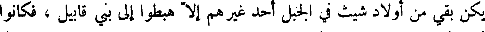
يكن بقي من أولاد شيث في الجبل أحد غيرهم إلا هبطوا إلى بني قابيل ، فكانوا
File: 000698.gt.txt (if the image is defective, simply delete all Arabic text and the line will be excluded)
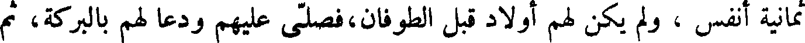
ثمانية انفس ، ولم يكن لهم أولاد فبل الطوفان فصلى عليهم ودعا لهم بالبركة، ثم
File: 000699.gt.txt (if the image is defective, simply delete all Arabic text and the line will be excluded)
بكى ، وقال لهم: انه لم يبق من جنسنا أحد إلا هؤلاء الثمانية الأنفس ، وأسأل
File: 000700.gt.txt (if the image is defective, simply delete all Arabic text and the line will be excluded)
الله الذي خلق آدم وحواء وحدهما ، ثم كثر ولدهما ، أن ينجيكم من هذا
File: 000701.gt.txt (if the image is defective, simply delete all Arabic text and the line will be excluded)
الرجز الذي اعد للامة السوء ، ويكثر ولدكم ، حتى يملأوا الأرض ، ويعطيكم
File: 000702.gt.txt (if the image is defective, simply delete all Arabic text and the line will be excluded)
ولد يعقوب
File: 000703.gt.txt (if the image is defective, simply delete all Arabic text and the line will be excluded)
وكان ليعقوب من الولد اثنا عشر ذكرا : روبيل ، وشمعون ، ولاوي ،
File: 000704.gt.txt (if the image is defective, simply delete all Arabic text and the line will be excluded)
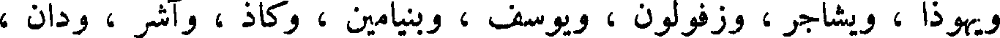
ويهوذا ، ويشاجر ، وزفولون ، ويوسف ، وبنيامين ، وكاذ ، وآشر ، ودان ،
File: 000705.gt.txt (if the image is defective, simply delete all Arabic text and the line will be excluded)
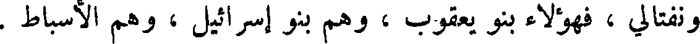
ونفتالي ، فهؤلاء بنو يعقوب ، وهم بنو إسرائيل ، وهم الأسباط .
File: 000706.gt.txt (if the image is defective, simply delete all Arabic text and the line will be excluded)
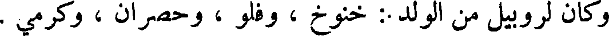
وكان لروبيل من الولد .: خنوخ ، وفلو ، وحصران ، وكرمي .
File: 000707.gt.txt (if the image is defective, simply delete all Arabic text and the line will be excluded)
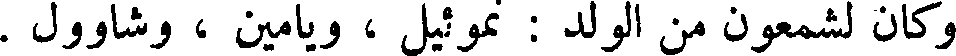
وكان لشمعون من الولد : نموئيل ، ويامين ، وشاوول .
File: 000708.gt.txt (if the image is defective, simply delete all Arabic text and the line will be excluded)
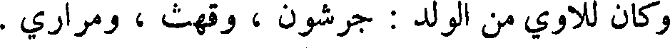
وكان للاوي من الولد : جرشون ، وقهث ، ومراري .
File: 000709.gt.txt (if the image is defective, simply delete all Arabic text and the line will be excluded)
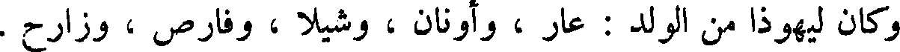
وكان ليهوذا من الولد : عار ، وأونان ، وشيلا ، وفارص ، وزارح .
File: 000710.gt.txt (if the image is defective, simply delete all Arabic text and the line will be excluded)
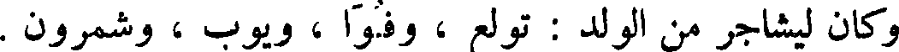
وكان ليشاجر من الولد : تولع وفوا ، ويوب ، وشمرون .
File: 000711.gt.txt (if the image is defective, simply delete all Arabic text and the line will be excluded)
وكان لآشر من الولد : يمنا ، واشوا ، وأشوي ، وبريعا ، وسارح .
File: 000712.gt.txt (if the image is defective, simply delete all Arabic text and the line will be excluded)
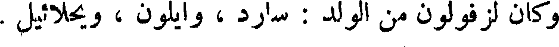
وكان لزفولون من الولد : سارد ، وايلون ، ويحلائيل .
File: 000713.gt.txt (if the image is defective, simply delete all Arabic text and the line will be excluded)
وولد ليوسف بأرض مصر : افرائيم ، ومنشى .
File: 000714.gt.txt (if the image is defective, simply delete all Arabic text and the line will be excluded)
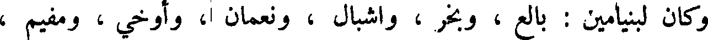
وكان لبنيامين : بالع وبخر واشبال ونعمان ا، وأوخي ، ومفيم ،
File: 000715.gt.txt (if the image is defective, simply delete all Arabic text and the line will be excluded)
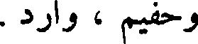
وحفيم ، وارد .
File: 000716.gt.txt (if the image is defective, simply delete all Arabic text and the line will be excluded)
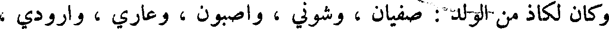
وكان لكاذ من الولد : صفيان ، وشوني ، واصبون ، وعاري ، وارودي ،
File: 000717.gt.txt (if the image is defective, simply delete all Arabic text and the line will be excluded)
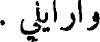
وارايلي .
File: 000718.gt.txt (if the image is defective, simply delete all Arabic text and the line will be excluded)
وكان لنفتالي من الولد يحصيل وغوني ويبصر ، وشاليم .
File: 000719.gt.txt (if the image is defective, simply delete all Arabic text and the line will be excluded)
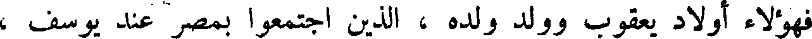
فهؤلاء أولاد يعقوب وولد ولده ، الذين اجتمعوا بمصر عند يوسف ،
To Save: `Ctrl+s`, make sure to choose `Webpage, complete`!